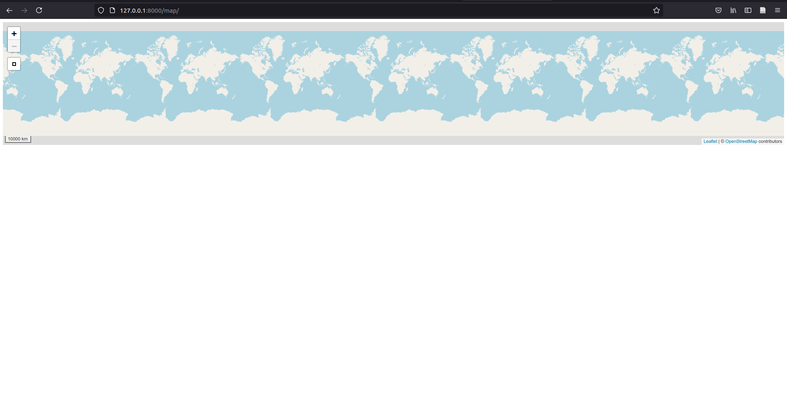
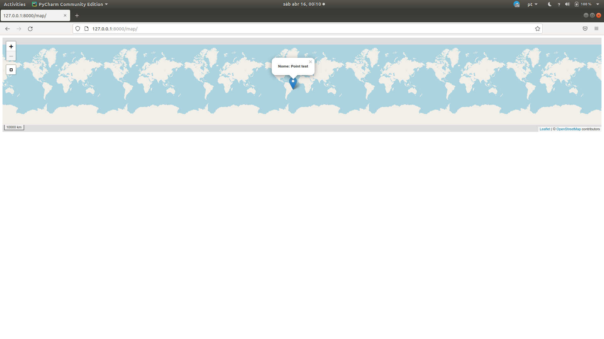
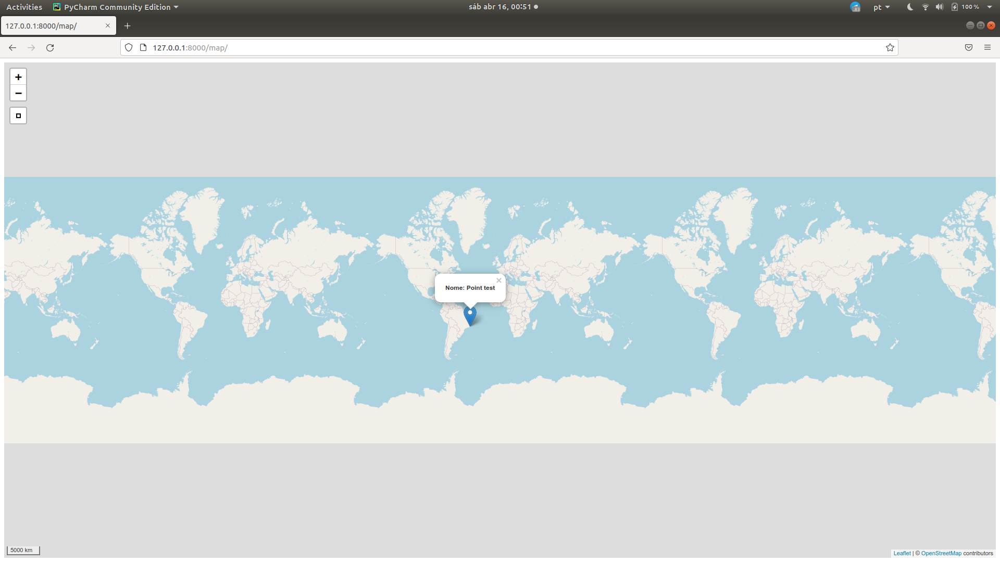

Criando um sistema para gestão de dados geográficos de forma simples e robusta III

Caso não tenha visto as publicações anteriores, deixo aqui o link e os temas abordados:
- Na primeira publicação falo sobre o
django-geojsonpara simular um campo geográfico no models; ogeojsonpara criar um objeto da classe geojson e realizar as validações necessárias para garantir robustez do sistema, e a criação do formulário de registro de dados usando oModelForm; - Na segunda publicação apresento os validadores de campo do
Djangocomo uma ferramenta fundamental na qualidade dos dados espaciais, sem depender de infraestrutura SIG (GIS).
Agora a ideia é implementar um webmap usando o módulo django-leaflet para apresentar os fenômenos mapeados com algumas informações no popup do mapa. Para isso iremos:
- usar o
GeoJSONLayerView, dodjango-geojsonpara retornar os dados salvos no formato apropriado para exibição no webmap; - usar o
django-leafletpara, além de implementar o webmap, podermos usar várias outras ferramentas (widget);
Vamos lá!
View GeoJSONLayerView
A serialização ou, em inglês serialization, é o processo/mecanismo de tradução dos objetos armazenados na base de dados em outros formatos (em geral, baseado em texto como, por exemplo, XML ou JSON), para serem enviados e/ou consumidos no processo de request/response.
No nosso caso isso será importante, pois para apresentar os dados salvos em um webmap, precisaremos servi-los no formato geojson. E é aí que o django-geojson entra. Nós o utilizaremos para fazer a mágica acontecer ao usar a classe GeoJSONLayerView.
A classe GeoJSONLayerView é um mixin que, em base ao modelo informado do nosso projeto, serializa os dados transformando-os em geojson e os servindo em uma view. Acredite, é bastante coisa para apenas algumas linhas de código.
Para entender a serialização, segue um exemplo…
Ao acessar os dados do banco de dados do nosso projeto, temos uma QuerySet.
>>> Fenomeno.objects.all()
<QuerySet [<Fenomeno: fenomeno_teste>]>
Ao acessar a geometria de um objeto do banco de dados do nosso projeto, temos um geojson.
>>> Fenomeno.objects.get(pk=3).geom
{'type': 'Point', 'coordinates': [-42.0, -22.0]}
Ao serializá-lo com o GeoJSONSerializer, temos como retorno uma FeatureCollection seguindo o formato geojson, tendo como propriedades os campos do model:
>>> from djgeojson.serializers import Serializer as GeoJSONSerializer
>>> GeoJSONSerializer().serialize(Fenomeno.objects.all(), use_natural_keys=True, with_modelname=False)
'{'crs': {'properties': {'href': 'http://spatialreference.org/ref/epsg/4326/',
'type': 'proj4'},
'type': 'link'},
'features': [{'geometry': {'coordinates': [-42.0, -22.0], 'type': 'Point'},
'id': 3,
'properties': {'data': '2021-06-22',
'hora': '02:07:57',
'nome': 'teste'},
'type': 'Feature'}],
'type': 'FeatureCollection'}'
Mais sobre serialização pode ser encontrado aqui ou aqui, com outro exemplo relacionado a dado geográfico usando o GeoDjango.
Então, ciente de toda a mágica por trás do GeoJSONLayerView e o seu resultado, vamos criar os testes para essa view.
Criando os testes da view
Como estou testando justamente uma view que serializa o objeto do meu modelo em formato geojson, precisarei desses dados salvos no banco de dados. Para tanto, vou adicionar ao setUp do meu TestCase valores válidos ao banco de dados do teste. Sem isso, não poderemos confirmar se a serialização está ocorrendo de forma correta. E, uma vez salvo, realizo um conjunto básico de testes:
-
Confirmo se o status code do request (método “get”) ao path que pretendo usar para essa views (no caso, “/geojson/"), retorna 200, código que indica sucesso no processo de request/response. Veja mais sobre os códigos aqui.
-
Em seguida, confirmo se a resposta recebida é uma
FetureCollectioncom os dados da instância criada anteriormente.
# testes.py
class FenomenoGeoJsonTest(TestCase):
def setUp(self):
Fenomeno.objects.create(
nome="Teste",
data="2020-01-01",
hora="09:12:12",
geom={"type": "Point", "coordinates": [-42, -22]},
)
def teste_geojson_status_code(self):
self.resp = self.client.get(r("geojson"))
self.assertEqual(200, self.resp.status_code)
def teste_path_geojson_returns_valid_feature_collection(self):
self.resp = self.client.get(r("geojson"))
self.assertEqual(
self.resp.json(),
{
"type": "FeatureCollection",
"features": [
{
"type": "Feature",
"properties": {
"popup_content": "<p><strong><span>Nome: </span>Teste</strong></p>",
"model": "core.fenomeno",
},
"id": 1,
"geometry": {"type": "Point", "coordinates": [-42.0, -22.0]},
}
],
"crs": {"type": "name", "properties": {"name": "EPSG:4326"}},
},
)
Obviamente, ambos testes falharão, pois, ainda não criamos a view e nem a designamos a um path do nosso sistema.
Para fazê-los passar, vamos primeiro criar a view: Em views.py criaremos uma classe nova, herdando da classe GeoJSONLayerView. Ela será a view responsável por resgatar os dados e servir-nos como uma FeatureCollection seguindo a estrutura de um geojson.
Um último detalhe é que, como estamos usando um Class Based-View, ao final a convertemos em view, com o método as_view().
# views.py
from djgeojson.views import GeoJSONLayerView
from map_proj.core.models import Fenomeno
class FenomenoGeoJson(GeoJSONLayerView):
model = Fenomeno
properties = ("popup_content",)
fenomeno_geojson = FenomenoGeoJson.as_view()
Adicionando propriedade para popup
Percebam que no teste_geojson_FeatureCollection eu já estou considerando que o geojson virá com properties com o nome de popup-content. Essa property ainda deverá ser criada no model em questão e poderá ter quantas informações acharmos pertinentes. Se tratam das informações do model a serem apresentadas no popup do mapa.
Por agora estou apenas informando o nome do fenômeno mapeado mas, mais à frente, podemos incrementar, adicionando um get_absolute_url por exemplo, para poder acessar aos detalhes do fenômeno diretamente a partir do popup do mapa.
#models.py
...
@property
def popup_content(self):
return self.nome
Adicionando um path a view
Para poder acessar essa view, precisamos incorporá-la na nossa urls.py:
# urls.py
from django.contrib import admin
from django.urls import path
from map_proj.core.views import fenomeno_geojson # novo!
urlpatterns = [
path("admin/", admin.site.urls),
path("geojson/", fenomeno_geojson, name="geojson"), # novo!
]
Com isso teremos os nossos últimos testes passando. Se ainda assim você tiver curiosidade, pode executar o runserver e acessar os dados pela url http://127.0.0.1:8000/geojson/. O resultado esperado são os dados servidos em geojson:
{
"type": "FeatureCollection",
"features": [
{
"type": "Feature",
"properties": {
"popup_content": "<p><strong><span>Nome: </span>Teste</strong></p>",
"model": "core.fenomeno",
},
"id": 1,
"geometry": {"type": "Point", "coordinates": [-42.0, -22.0]},
}
],
"crs": {"type": "name", "properties": {"name": "EPSG:4326"}},
}
⚠️ Garanta que você já tenha inserido algum dado ao seu projeto ;)
Pronto, já temos uma view nos servindo os dados em formato geojson. Vamos ao Django-leaflet, para entender como montar um webmap.
Django-leaflet
Para saber mais sobre o django-leaflet, recomendo dar uma olhada na página pypi e na documentação.
Você deve estar se perguntando: “por quê usar o django-leaflet se eu posso usar o leaflet “puro”, já que se trata de uma biblioteca JavaScript para produção do mapa no frontend?”.
Os autores do projeto django-leaflet deixam alguns pontos que justificam sua adoção na página da documentação. Das quais eu destaco:
- Possibilidade de uso das ferramentas de edição de geometría usando os
widget; - Fácil integração dos
widgetsna páginaadmindo Django; - Controle da aparência dos mapas a partir do Django
settings.py;
⚠️ E por último, mas não menos importante:
django-leafleté compatível com os camposdjango-geojson, o que permite o uso de dados geográficos sem a necessidade de uma base de dados espaciais. O motivo de toda essa série que tenho produzido :)
Bem legal! Eles criaram um pacote já compatível com o pacote django-geojson, que nos permite simular campos geográficos sem a necessidade de toda a infraestrutura de uma base de dados de SIG (PostGIS, por exemplo).
⚠️ Porém, atenção ao seguinte detalhe:+
O
django-leafletdepende da biblioteca GDAL, não se esqueça de instalá-la antes.
Instalando django-leaflet
pip install django-leaflet
Após a sua instalação é necessário incluí-lo no settings.py como INSTALLED_APPS.
⚠️ Não esqueça de adicioná-lo ao requirements.txt do projeto, também.
# settings.py
INSTALLED_APPS = [
...
'djgeojson',
'leaflet', # novo
...
]
Usando o leaflet
Com leaflet instalado, devemos então:
- Na pasta da nossa app, vamos criar uma pasta chamada “templates”;
- E nessa pasta, criar um arquivo HTML (neste caso vou chamar de “map.html”;
- Nessa página vamos carregar as
template_tagsdoleafletpara poder usarleaflet_js,leaflet_csse oleaflet_map:
Nosso map.html:
{% load leaflet_tags %}
<head>
...
{% leaflet_js %}
{% leaflet_css %}
</head>
...
<body>
...
{% leaflet_map "yourmap" %}
...
</body>
Essas template_tags irão tentar acessar as configurações do leaflet presentes no settings.py da app, caso existam. Do contrário, serão usados valores padrão de configuração. O interessante dessas template_tags é que com elas podemos customizar tais configurações a cada template;
- Como a ideia é apenas renderizar essa página, vou adicionar ao
urls.pyum path a ela, usando oTemplateView. Com isso, ao receber um request neste path, a responsta será direcionada à renderização dessa página:
#urls.py
from django.contrib import admin
from django.urls import path
from django.views.generic import TemplateView
from map_proj.core.views import fenomeno_geojson
urlpatterns = [
path("admin/", admin.site.urls),
path("geojson/", fenomeno_geojson, name="geojson"),
path("map/", TemplateView.as_view(template_name="map.html"), name="map"),
]
Isso já o suficiente para termos nosso webmap apresentado:

Imagino que não seja o que esperava, né? Fique calmo. O leaflet buscou as configurações do mapa e, como não encontrou, retornou o mesmo com as configurações padrão. Veremos em breve como alterar as configurações do mapa.
Antes disso, vamos “linkar” a view que nos serve o geojson com os dados salvos no banco com o webmap em questão, para que os dados sejam apresentados.
Renderizando o geojson no mapa
Lembra que temos uma view que serializa os dados armazenados no banco e nos serve como uma FeatureCollection e que podemos acessar tais dados pelo path geojson/?
Então, iremos adicionar um script à nossa página no qual uma variável dataurl receberá os dados dessa url adicionando tais dados ao mapa, assim que o mesmo for inicializado, desencadeando o processo de construção da popup de cada feição apresentada com sua posterior inserção ao mapa:
{% load leaflet_tags %}
<script>
var dataurl = '{% url "geojson" %}';
window.addEventListener("map:init", function (event) {
var map = event.detail.map;
// Download GeoJSON data with Ajax
fetch(dataurl)
.then(function(resp) {
return resp.json();
})
.then(function(data) {
L.geoJson(data, {
onEachFeature: function onEachFeature(feature, layer) {
var props = "<p><strong><span>Nome: </span> " + feature.properties.popup_content + "</strong></p>";
layer.bindPopup(props);
}}).addTo(map);
});
});
</script>
<head>
{% leaflet_js %}
{% leaflet_css %}
</head>
<body>
{% leaflet_map "yourmap" %}
</body>
Veja que, para a criação da variável dataurl, estamos usando a template_tag do django:
var dataurl = '{% url "geojson" %}';
Veja mais sobre ela aqui.
Repare também que, neste processo, a cada Feature, será carregada as suas propriedades a serem apresentadas no popup:
L.geoJson(data, {
onEachFeature: function onEachFeature(feature, layer) {
var props = "<p><strong><span>Nome: </span> " + feature.properties.popup_content + "</strong></p>";
layer.bindPopup(props);
}}).addTo(map);
Com o runserver em execução, já poderemos ver o nosso mapa com o dado carregado e as propriedades que definimos no popup:

⚠️ Garanta que você já tenha inserido algum dado ao seu projeto ;)
Mudando o tamanho do webmap:
Antes de passarmos às configurações do leaflet, podemos alterar as dimensões do mapa definindo um style. Por exemplo, para que o mapa ocupe toda a área possível do navegador, basta adicionarmos:
<style>
#yourmap {
width: 100%;
height: 100%;
}
</style>

Configurações do leaflet
Bom, além das template_tags do leaflet, o uso do django-leaflet nos permite definirmos as suas configurações no settings.py da app, a partir da seção LEAFLET_CONFIG.
Dentre as configurações possíveis
, vou usar apenas o par de coordenadas ao qual o mapa deverá estar centralizado por padrão (DEFAULT_CENTER) e o zoom padrão (DEFAULT_ZOOM):
LEAFLET_CONFIG = {
'DEFAULT_CENTER': (-22, -42),
'DEFAULT_ZOOM': 7,
}
Com isso nosso mapa sempre será apresentado centralizado nas coordenadas (-22, -42) e com o zoom 7:

Pronto: com esses três artigos, já temos um sistema com formulário de inserção de dados, com as devidas validações dos dados preenchidos no mesmo, assim como um webmap apresentando-os ao mundo :-).
Na próxima publicação vamos ver como fazer o deploy desse sistema no heroku 🚀.
Até lá!
Felipe Sodré Mendes Barros
Cientista de dados geográficos
Geógrafo interessado em articular tecnologia e estatística para solucionar problemas ambientais